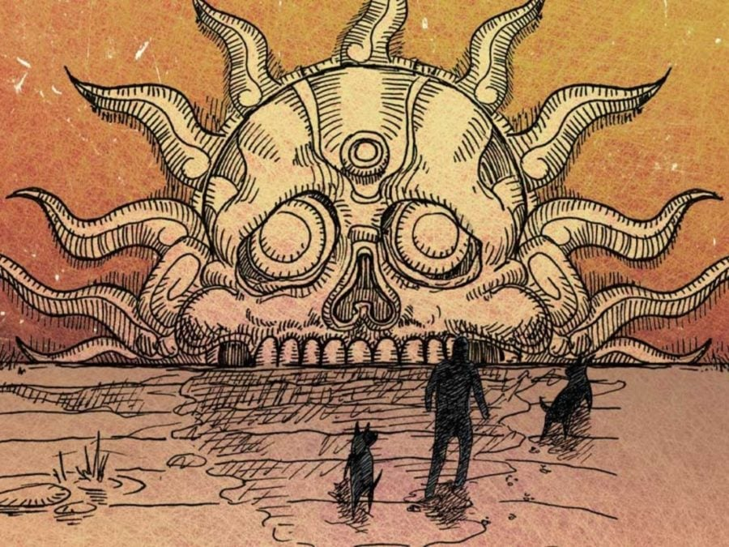

Atravesando los nueve niveles del inframundo |
|
Para llegar al Mictlán, según la mitología mexica, se cree que el alma de una persona muerta debe atravesar nueve niveles en el inframundo, conocidos como niveles. Este proceso se considera un viaje de cuatro años y es un camino que los muertos deben recorrer para alcanzar el descanso eterno. Durante este viaje, los muertos deben superar varios desafíos, como cruzar el río Apanohuacalhuia y enfrentar obstáculos en las montañas, donde deben ser ágiles para no ser aplastados. El Mictlán es gobernado por Mictlantecuhtli y Mictecacíhuatl, dioses de la muerte y el inframundo.  |
La antigua visión mexica sobre el viaje después de la muerte